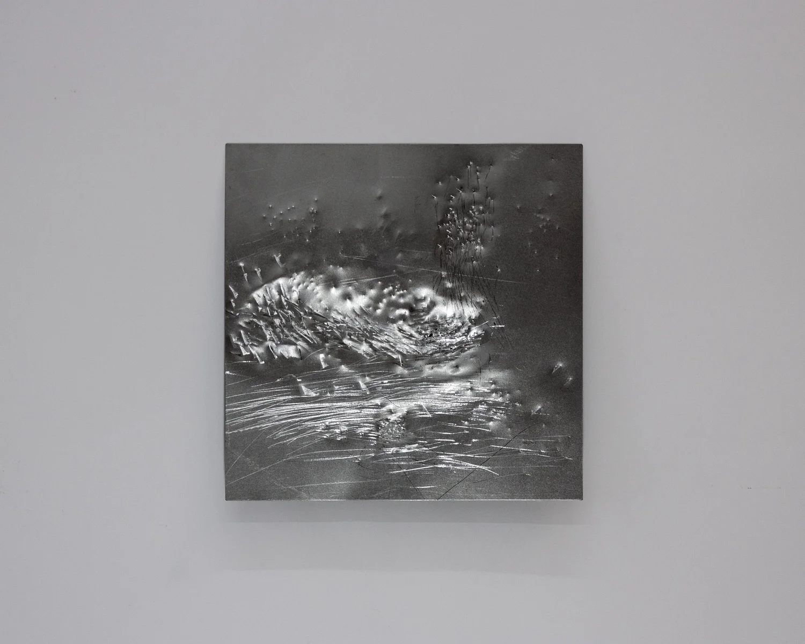
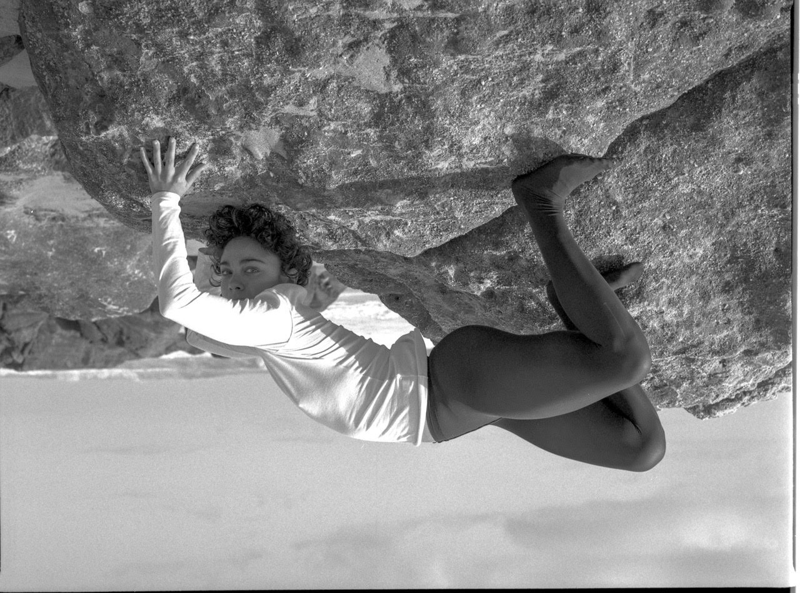

Ghost Bitch is a series shaped through direct confrontation with metal. Each sheet is worked by repeated strikes of tools, leaving dents, folds, and scars that testify to the intensity of the encounter. The surface shifts between hardness and vulnerability, and as light moves across it, the work changes, becoming a different piece in each moment. This transformation gives a sense of temporality, as if the scars could disappear or reveal new ones. The process is not about control but about dialogue with resistance; the force of the blow, the yielding of matter, the trace that remains. In this exchange, the material itself becomes voice and body, carrying memory of impact. What emerges are forms that stand both strong, sensitive and defiant, where every mark is evidence of time, endurance, and transformation.


Mascaron — a face mask that adorns a non anthropomorphic structure, such as architecture, clothing, furniture, or a beehive — is endowed with magical powers to ward off evil spirits.


Cut Off comes from an experimental and physical engagement with natural materials collected during the artist's process of immigration and search for new homes. Through this process, the paintings hold memories of the homeland of her childhood. Originally conceived as one large-scale painting, the work was later cut into twelve pieces, becoming what is now known as The Cut Off Series. The act of cutting reflects ideas of separation, displacement, and reconstruction. She paints on unprimed sailcloth laid directly on the floor, using self-made pigments from soils collected in different places, including Cap Canaille in Cassis, France, and Grünewald in Berlin, alongside spirulina, red cabbage, and shell dust. Working with natural and locally sourced materials, her practice stays closely connected to the textures and transformations of the natural world while maintaining a minimal environmental impact. Her palette recalls the shifting tones of the Caribbean Sea, mixed with the landscapes of the Dominican Republic, where she grew up, and the German forests where she has lived for over a decade. Rooted in nature, her work explores ideas of home, migration, memory, and sustainable ways of making art.


Forest at Night is a multi-disciplinary installation that includes paintings, sculptures and poetry encased by a vivid blue wall paint, nostalgic of the facades of Caribbean houses of her youth. Captivated by the twisting forms of the trees and their resemblance to the human body, Thaiz explores the relationship between humankind and nature, including the Anthropocene, mythology, fairy tales, spirituality, and the nature of womanhood; themes still present in her work today.



Born in NYC, grew up in Dominican Republic.
Lives between NYC & Berlin.